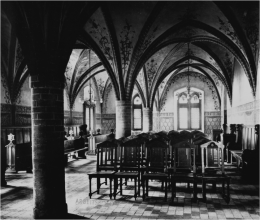

Das DFG- Projekt wird seit Mai 2013 gemeinsam von der TU Berlin, Institut für Kunstwissenschaft und Historische Urbanistik (Prof. Dr. von Buttlar) und der Humboldt Universität Berlin, Lehrstuhl für Preußische Geschichte (Prof. Dr. Neugebauer, HU und BBAW) im Zeitraum bis Mai 2016 realisiert. Eine Gesamtdarstellung des Beitrages der Provinz Brandenburg (mit der Metropole Berlin) zur Denkmalpflege und zum Restaurierungswesen im letzten Drittel des 19. Jahrhunderts und im beginnenden 20. Jahrhundert ist ein bisher unbearbeitetes Forschungsfeld.
Untersucht werden die Wechselwirkungen zwischen seitens der Monarchie betriebener Denkmalpolitik, den Initiativen des Provinzialverbandes und der Regierungsbaubehörden vor dem Hintergrund der nach 1900 geführten Grundsatzdebatte über die Erhaltungsmethoden Konservieren und Restaurieren. Bei den bedeutenderen Baudenkmälern und herausragenden Restaurationsbauten haben Wilhelm I. und Wilhelm II. über die Mittel des „Allerhöchsten Dispositionsfonds“ auch in der Provinz Brandenburg in laufende Verfahren eingegriffen.
Viele Einzelaspekte der Restaurationen, Herstellungsbauten und Erweiterungen an Bau- und Kunstdenkmälern der Provinz Brandenburg mit Berlin aus dieser Epoche werden erstmals recherchiert und im Überblick dargestellt. Der topographische Untersuchungsbereich erstreckt sich auf die ehemalige Provinz Brandenburg (Regierungsbezirke Potsdam und Frankfurt/Oder mit den 1920 zu Groß-Berlin gelangten Orten) und das alte Stadtgebiet von Berlin. Außerdem werden auch Orte im historischen Ostbrandenburg und in der Neumark (Polen) in die Betrachtung einbezogen. Es werden vor allem die am häufigsten betroffenen Gattungen der staatlichen Denkmalpflege, wie z. B. Stadt- und Klosterkirchen, Burg- und Hospitalkapellen, Rathäuser, Stadttore und Stadtmauern, Wehrtürme und Burgruinen untersucht. Mit der Ausweitung des Denkmalbegriffes gelangten auch städtebaulich wirksame Freilegungen, Platzumgestaltungen und die Veränderungen an historisch gewachsenen Stadtstrukturen (z. B. das Rathaus Frankfurt/O., die Umgebung der Marienkirche Prenzlau, Wettbewerbe für das Stadthaus Potsdam und das Opernhaus Berlin) in den Fokus der Betrachtung. Die erste systematische fotografische Aufnahme und Erfassung von bedeutenden Bauten und Baudenkmälern vom Mittelalter bis zum Barock, die der Fotograf Friedrich Albert Schwartz (1836-1906) im Auftrag des Magistrats der Stadt Berlin vornahm, soll ebenfalls untersucht werden. Abgestuft nach Grad und Umfang des Eingriffs sind verschiedene Methoden der “Intervention” zu differenzieren, wie beispielsweise Instandsetzungen, Freilegungen, Restaurierungen, Ausmalungen, Wiederherstellungen (Herstellungsbauten), Stilvereinheitlichungen, Neuschöpfungen in einem historischen Stil und Teilabrisse. Zu berücksichtigen sind dabei auch die durch die Baubehörden verwendeten Materialien, wie etwa Zement, Asphalt, Eisen oder Eternit. In Kooperation mit dem DAI und der Arbeitsstelle für Digitale Archäologie am Archäologischen Institut der Universität zu Köln wird die Arachne Objektdatenbank genutzt, die die Restaurierungsmaßnahmen an einzelnen Bauwerken anhand von archivalischen Quellen, Plänen, Messbildern, historischen Fotografien und Artikeln aus Bauzeitschriften dokumentiert und sämtliche Daten erfasst. Eine Auswahl der bedeutendsten denkmalpflegerischen Objekte der Datenbank wird in größerer Bearbeitungstiefe als „Katalog der Restaurierungsobjekte in der Provinz Brandenburg/Berlin 1860/70-1918“ veröffentlicht werden.
Das Projekt soll, ausgehend von den Grundlegungen des ersten Konservators der Kunstdenkmäler Preußens, Ferdinand von Quasts, das Wirken und die denkmalpflegerischen Positionen der nachfolgenden preußischen Konservatoren Rudolf Bergau, Heinrich von Dehn-Rotfelser, Reinhold Persius und Hans Lutsch erforschen und analysieren. Untersucht wird, inwieweit die 1891 im Zuge der Einrichtung der Provinzialkommissionen für die Erhaltung und Erforschung der Kunstdenkmäler geschaffene Position des Provinzialkonservators für Brandenburg – der die Reichshauptstadt mitverwaltete – im Zusammenwirken mit dem in Berlin dem Kultusministerium zugeordneten Konservator der Kunstdenkmäler Preußens Möglichkeiten für einen behutsameren Umgang mit dem architektonischen Erbe eröffnete. Neben den überlieferten Gutachten der Provinzialkonservatoren Gustav Bluth, Georg Büttner und Theodor Goecke zu Restaurierungsprojekten besitzen die von 1897 bis 1916 veröffentlichten „Berichte über die Verhandlung der Provinzial-Kommission für die Denkmalpflege in der Provinz Brandenburg und über die Tätigkeit des Provinzial-Konservators“ einen besonderen Quellenwert.
Von zentraler Bedeutung ist, dass sich die Prozesse der Erhaltung des architektonischen Erbes im 19. Jahrhundert im Grenzbereich zwischen historistischer Architektur und Denkmalpflege als neu geschaffener Fachdisziplin vollzogen. Eine der Schwierigkeiten bestand darin, dass sich das bereits von F. von Quast und H. von Dehn-Rotfelser postulierte Konservieren und behutsame Restaurieren auf der Ebene der Regierungsbaubezirke nur schwer durchsetzen konnte. Im Prozess der Erarbeitung der Inventare der Bau- und Kunstdenkmäler (1880-1885 und 1899-1907) offenbarte sich, dass sowohl von der Architektenschaft und von den Konservatoren als auch von den Vertretern des Provinzialausschusses Initiativen ausgingen, die das allgemeine Bewusstsein für die heimischen Denkmäler förderten. Aus den Stellungnahmen der Provinzialkonservatoren können Antworten darauf erwartet werden, welche Faktoren die oft auftretende Diskrepanz zwischen Theorie und Restaurierungspraxis begünstigt haben und welche widerstreitenden Bestrebungen es zwischen Kultusministerium und Provinzialausschuss bzw. zwischen einigen Provinzialkonservatoren und den Konservatoren der preußischen Kunstdenkmäler sowie den Baubeamten der Regierungen und Baukreise gab. Der Fortschritt, aber auch die zeitweise Stagnation in der Entwicklung der staatlichen Denkmalpflege zwischen 1860/70 und dem 1. Weltkrieg werden anhand der Provinz Brandenburg und Berlins aufgezeigt.
Der Ansatz, dass der Staat Aufgaben konstituiert, aber auch Aufgaben übernimmt, die aus anderen Ebenen der Gesellschaft an ihn herangetragen werden, ist in dem Quellenwerk zur Geschichte Preußens, der „Acta Borussica“ N.F., thematisiert. Ein solches Wechselspiel lässt sich bei der Entwicklung der staatlichen preußischen Denkmalpflege beobachten, als die inhaltlichen Forderungen, die auf den Versammlungen des Gesamtvereins der Geschichts- und Altertumsvereine bezüglich der Organisation der staatlichen Denkmalpflege erhoben wurden, Berücksichtigung fanden.
Prof. Dr. Adrian von Buttlar
TU Berlin
Institut für Kunstwissenschaft und Historische Urbanistik
FB Kunstgeschichte
Sekr. A 56
Straße des 17. Juni 150/152
10623 Berlin
Tel.: 030-314-23232
Prof. Dr. Wolfgang Neugebauer
Humboldt Universität Berlin
Institut für Geschichtswissenschaften
Alfred Freiherr von Oppenheim-Professur für Geschichte Preußens
Unter den Linden 6
10099 Berlin
Tel.: 030-2093-1677
Projektbearbeiter
Dr. Andreas Meinecke
TU Berlin / HU Berlin
Dienstadresse:
DFG-Projekt „Preußische Denkmalpflege“
Institut für Kunstwissenschaft und Historische Urbanistik
FB Kunstgeschichte
Fraunhoferstr. 33-36
10623 Berlin
Tel.: 030-314-75870
andreas.meinecke@tu-berlin.de